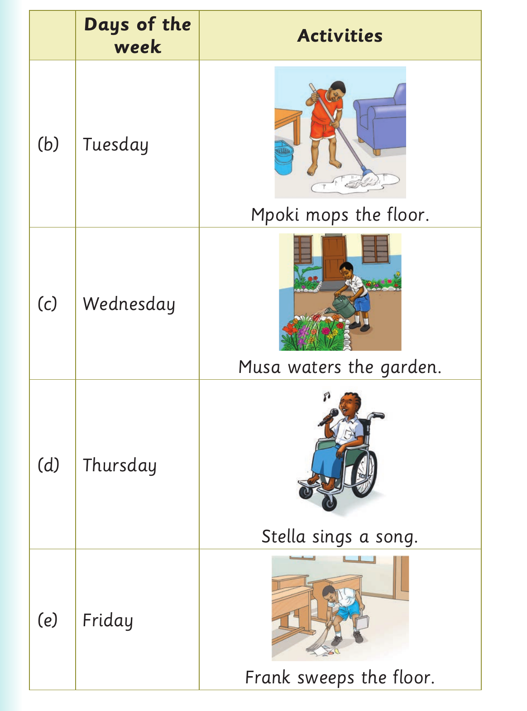

Days of the week - activities continued

Days of the Activities week (b) Tuesday Mpoki mops the floor. (c) Wednesday Musa waters the garden. (d) Thursday Stella sings a song. (e) Friday Frank sweeps the floor.

Days of the Activities week (b) Tuesday Mpoki mops the floor. (c) Wednesday Musa waters the garden. (d) Thursday Stella sings a song. (e) Friday Frank sweeps the floor.